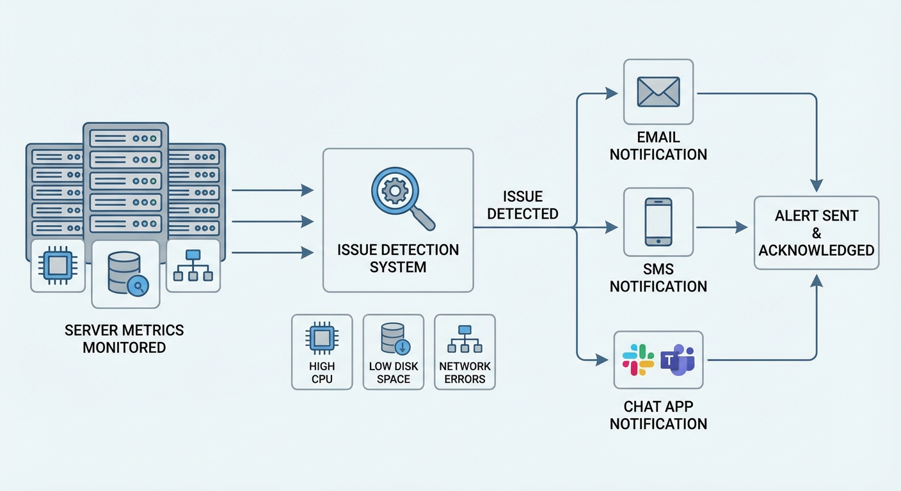
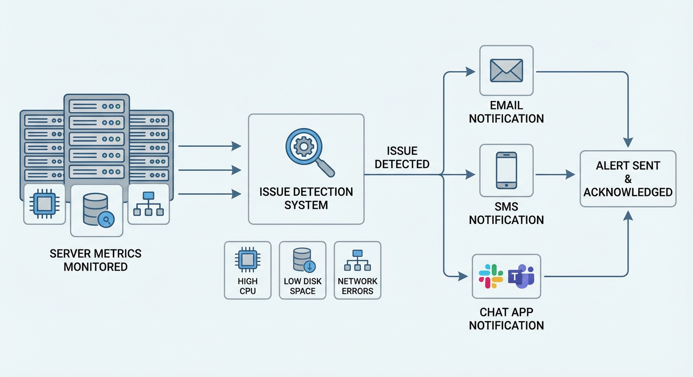

Remote Infrastructure Monitoring and Alerts.
Project explanation
This project focuses on providing full visibility into the health of an IT infrastructure. It is aimed at environments where early fault detection is essential to ensure service continuity. The system monitors resources such as CPU, memory, disk, network usage, service availability, and response times. Collected information is presented clearly through dashboards, facilitating operational decision-making. Additionally, an alerting system was implemented to automatically notify administrators when defined thresholds are exceeded.
Monitoring agents were deployed on servers to collect operating system and service metrics. Prometheus was used to capture real-time metrics, while Zabbix complemented monitoring through periodic checks. Grafana was configured as the main visualization tool, creating dashboards tailored to server type and environment. Alertmanager was integrated to define alert rules based on critical conditions and thresholds. Python scripts were developed to process special events and enrich notifications. Alerts were sent via email and messaging systems. Failure simulations were conducted to validate system effectiveness. The architecture and maintenance procedures were fully documented.
Proactive monitoring is essential, for critical infrastructures. It allows issues to be detected before they impact users. It reduces mean time to resolution of incidents. It improves overall system stability. It provides operational confidence to the technical team.
Reference images
 
